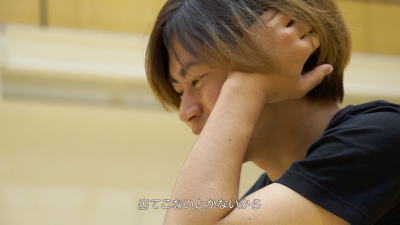
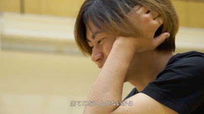
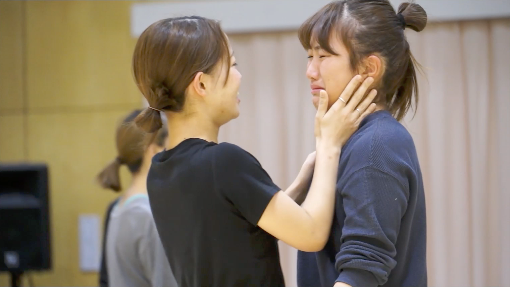
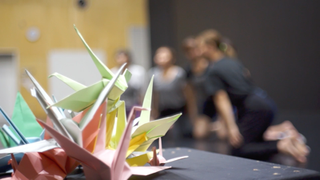
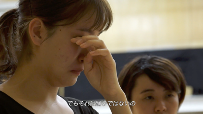
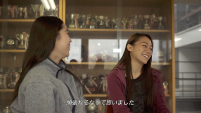
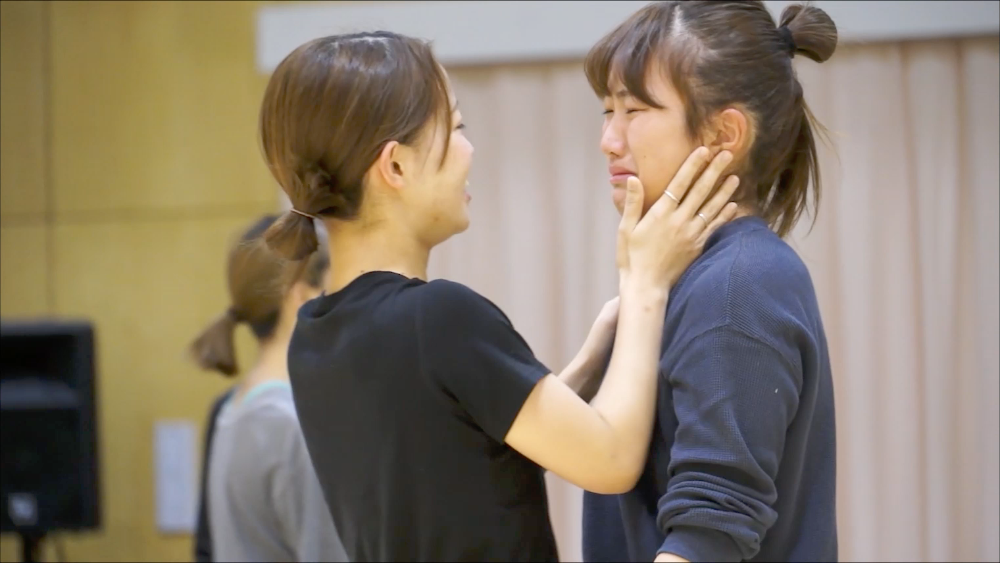
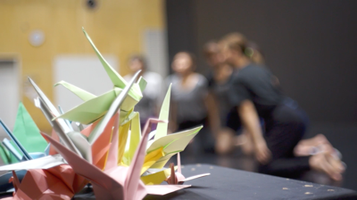
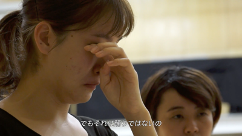
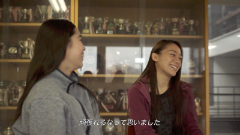

EXPRESS 筑波大学ダンス部
2020.01 / Documentary Movie / Director, Cinematographer & Editor
毎年夏に行われる創作ダンスの全国大会、全日本高校・大学ダンスフェスティバル神戸にて三連覇を果たした強豪・筑波大学ダンス部。激動の夏を過ごした彼女たちは11月に開催される自主公演「DANCE EXPRESS Vol.14」に向けて作品作りに邁進していた。彼女たちを突き動かすものはなにか。彼女たちはなぜ踊るのか。部員たちの2ヶ月間を追ったドキュメンタリー。
Credits
- Produce : Sta2one instagram
- Cinematographer, Editor : Tomoya Onuki / Kaito Shidaraku / Shinnosuke Ando / Yuich Kato
- Cast : 筑波大学ダンス部 Official HP
- Narrator : Gaku Matsumura
- Special Thanks : 筑波大学舞踊研究室 / 筑波大学情報メディア創成学類 クリラボ管理チーム
 
 
